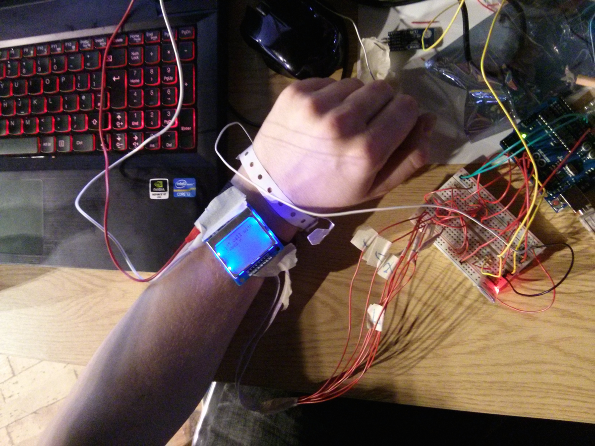
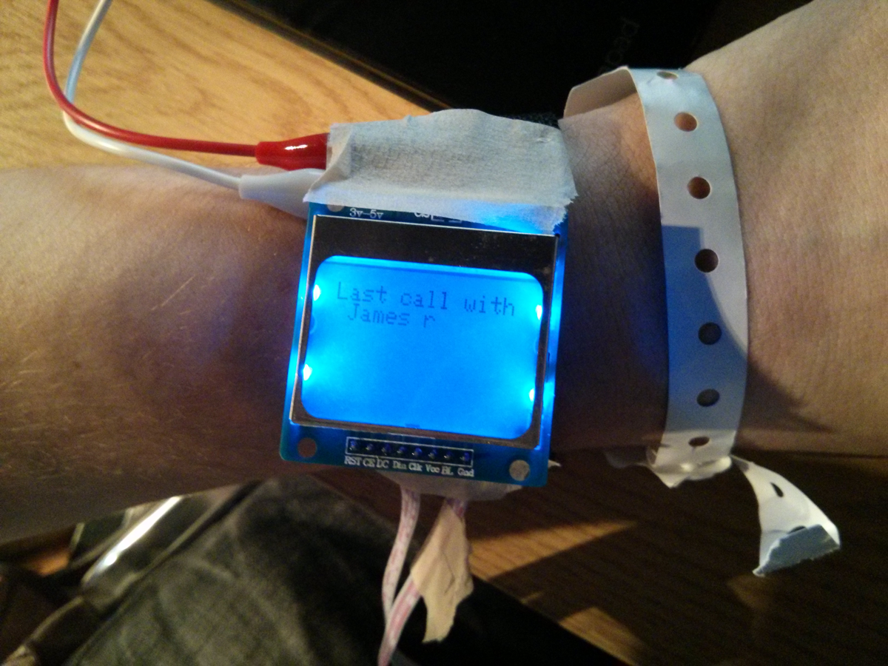
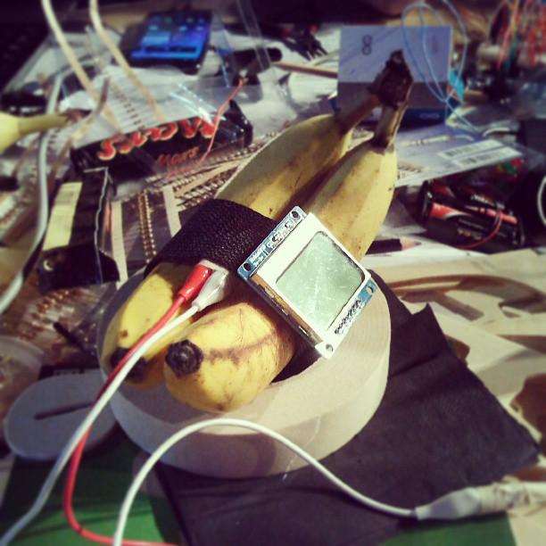

Wrist.io
2013, London. Hackaton project of a bluetooth connected smartwatch.
Custom electronics, Android, banana.
Collaborators: James Parry, Peter Bouquet, Giuseppe Burdo
Wrist.io is a project developed during the Hacked hackaton held in London in 2013. It's a basic smartwatch that shows you the name of the person calling your mobile phone.
  